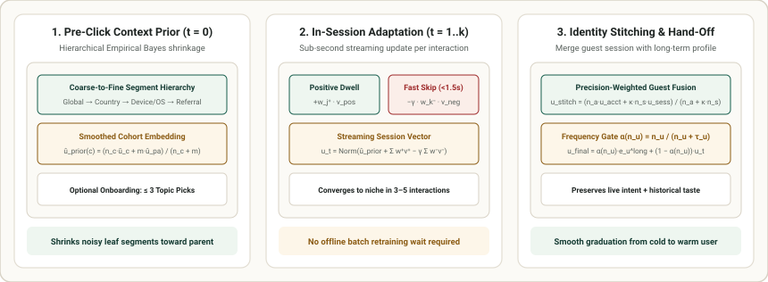

2. User Cold-Start: Context Priors, Active Onboarding & Real-Time In-Session Adaptation
When a brand-new user opens an app for the first time—or browses in an unauthenticated session—their historical interaction set is empty ($|\mathcal{R}_u| = 0$). In consumer feeds, over $60\%$ of first-session drop-off occurs within the first $60\text{ seconds}$ if the initial slate feels generic or repetitive. Solving User Cold-Start requires a three-stage progression: (1) Pre-Click Context Priors at $t = 0$ before the first click, (2) Active Onboarding Prompts when explicit preference elicitation is available, and (3) Real-Time In-Session Adaptation that reacts immediately to both positive dwell time and fast skips before handing off to a long-term user profile.

1. Pre-Click Personalization ($t = 0$): Hierarchical Context Priors
Even before a user clicks a single item ($t = 0$), an incoming request carries useful non-identifying context $c$—such as (country, city, device_type, os, language, local_hour, referral_source). A visitor arriving at 11:00 PM on a desktop browser via a technical blog link has a very different intent distribution than a visitor arriving at 7:00 AM on a mobile phone via a short-video ad.
However, fine-grained leaf segments $c$ (e.g., IN + macOS + 23:00 + github.com) often have small sample sizes $n_c$, causing raw segment averages $\bar{\mathbf{u}}_c$ to overfit noise. To avoid noisy estimates, systems organize context attributes into a coarse-to-fine hierarchy $\ell_0 \to \ell_1 \to \dots \to \ell_L$ (e.g., Global → Country → Device/OS → Referral × TimeBucket) and apply recursive Empirical Bayes Shrinkage from each node $c$ toward its parent cohort $\text{pa}(c)$:
- Dense Segment ($n_c \gg m$): When a leaf cell has $n_c = 50{,}000$ historical sessions and $m = 200$, the weight $\frac{n_c}{n_c + m} = 0.996$ trusts the specific leaf average $\bar{\mathbf{u}}_c$.
- Rare / Unseen Leaf ($n_c \ll m$ or $n_c = 0$): The estimate smoothly backs off to the parent cohort $\hat{\mathbf{u}}_{\text{prior}}(\text{pa}(c))$ rather than producing high-variance noise.
2. Active Onboarding: High-Information Preference Elicitation
Many platforms optionally present a quick onboarding step (e.g., "Pick 3 topics, genres, or creators you enjoy"). A common mistake is asking new users to rate universally popular mainstream hits: if almost everyone likes an item—or if an item is too obscure for most new users to recognize—the response provides very little information about which taste cluster the user belongs to.
Effective onboarding selects anchor items or topic clusters that balance two properties:
- High Recognition (Low Skip Probability): New users can immediately recognize and form an opinion on the item or topic.
- High Taste Polarization (High Information Gain): The user's choice cleanly separates distinct interest clusters (e.g., splitting systems programming vs. sports vs. cooking), rapidly shrinking uncertainty in the user's starting profile within 2–3 picks.
In practice, tree-based active collaborative filtering models, clustering-based topic pickers, or bandit-driven onboarding slates can be used to select these prompts dynamically based on each user's previous selection.
3. Real-Time In-Session Adaptation: Positive Dwell & Negative Skip Repulsion
Many modern feeds skip explicit onboarding questionnaires altogether and drop the user straight into the feed at $t = 0$. How does the system converge to a new user's niche within 3–5 interactions without waiting for an offline model retraining job?
Instead of relying on a static user ID lookup (which cannot update in milliseconds), the system updates a real-time session state vector $\mathbf{u}_t$ on the fly from the user's live interaction stream $\mathcal{H}_t$. Sequential models (such as RNN/GRU session encoders, short-window Transformers like SASRec/BERT4Rec, or lightweight streaming vector aggregators) can be used here. At its core, the streaming update combines positive engagements and explicit negative skips:
- Positive Engagement Weight ($w_j^+$): Scales with normalized dwell or watch completion (plus explicit actions like likes, saves, or shares), weighted toward recent interactions.
- Explicit Negative Skip Repulsion ($-\gamma w_k^-\,\mathbf{v}_{i_k}$): During cold-start, a fast skip ($t_{\text{watch}} < 1.5\text{ s}$) is often the most frequent signal. Pushing $\mathbf{u}_t$ away from skipped item vectors $\mathbf{v}_{i_k}$ with a bounded repulsion weight $\gamma \in [0.15, 0.35]$ immediately moves the user state out of rejected topics so the feed does not show five consecutive items from a category the user just dismissed.
- Smooth Hand-Off to Long-Term Profile: As the user accumulates $n_u$ lifetime interactions across sessions, the system blends the fast session representation $\mathbf{u}_t$ with their long-term profile $\mathbf{e}_u^{\text{long}}$ using a frequency gate $\alpha(n_u) = \frac{n_u}{n_u + \tau_u}$:
$$\mathbf{u}_{\text{final}} = \alpha(n_u)\,\mathbf{e}_u^{\text{long}} + \big(1 - \alpha(n_u)\big)\,\mathbf{u}_t$$
4. Anonymous-to-Logged-In Identity Stitching
Frequently, a user browses as an unauthenticated guest on web or mobile (building up an in-session vector $\mathbf{u}_{\text{sess}}$ over $n_{\text{sess}}$ interactions) and then signs into an existing account (with historical profile $\mathbf{u}_{\text{acct}}$ estimated from $n_{\text{acct}}$ interactions). Rather than discarding the live guest session or overwriting the long-term account history, precision-weighted fusion combines both estimates inversely proportional to their uncertainty:
where $\kappa > 1$ upweights the user's immediate in-session intent while preserving their broader historical preferences.
5. Worked Numerical Example: 4-Step Cold User Trajectory in $\mathbb{R}^2$
Suppose our item catalog lives in $\mathbb{R}^2$ where Axis 1 represents Tech / Coding affinity and Axis 2 represents Sports / Football affinity. Three candidate items are:
Item A (Champions League Highlights): $\mathbf{v}_A = [0.10, 0.95]^\top$Item B (Python Asyncio Deep Dive): $\mathbf{v}_B = [0.92, 0.10]^\top$Item C (Rust Kernel Systems Talk): $\mathbf{v}_C = [0.96, -0.05]^\top$
With skip repulsion coefficient $\gamma = 0.30$, trace a brand-new user from $t = 0$ through their first three events:
| Session Step $t$ | Observed Event | Update Vector $\Delta \mathbf{u}_t$ | Normalized User Vector $\mathbf{u}_t$ | Scores $[\langle \mathbf{u}_t, \mathbf{v}_A \rangle,\, \langle \mathbf{u}_t, \mathbf{v}_B \rangle,\, \langle \mathbf{u}_t, \mathbf{v}_C \rangle]$ | Next Top-1 Recommendation |
|---|---|---|---|---|---|
| Step $t = 0$Pre-click arrival | Context: Mobile iOS, 8 PMSlightly sports-skewed prior | $\hat{\mathbf{u}}_{\text{prior}} = [0.45, 0.65]^\top$ | $[0.569, 0.822]^\top$ | A: $+0.838$, B: $+0.606$, C: $+0.505$ | Item A"Champions League" |
| Step $t = 1$Fast Skip ($0.8\text{ s}$) | User immediately skips Item ARepulsion $-\gamma w_1^- \mathbf{v}_A$ ($w_1^- = 1.5$) | $-0.45 \times [0.10, 0.95]^\top$$= [-0.045, -0.428]^\top$ | $[0.878, 0.479]^\top$ | A: $+0.543$, B: $+0.856$, C: $+0.819$ | Item B"Python Asyncio" |
| Step $t = 2$Full Watch ($35\text{ s}$) | User finishes Item BPositive update $+w_2^+ \mathbf{v}_B$ ($w_2^+ = 1.2$) | $+1.20 \times [0.92, 0.10]^\top$$= [+1.104, +0.120]^\top$ | $[0.968, 0.252]^\top$ | A: $+0.336$, B: $+0.916$, C: $+0.917$ | Item C"Rust Kernel Talk" |
| Step $t = 3$Watch + Like | User likes Item CPositive update $+w_3^+ \mathbf{v}_C$ ($w_3^+ = 1.8$) | $+1.80 \times [0.96, -0.05]^\top$$= [+1.728, -0.090]^\top$ | $[0.997, 0.075]^\top$ | A: $+0.171$, B: $+0.925$, C: $+0.953$ | Locked onto Systems/CodeCosine $>0.95$ in 3 clicks! |
6. Reference Implementation: In-Session Cold User Trajectory
import numpy as np
def normalize(v: np.ndarray) -> np.ndarray:
return v / np.linalg.norm(v)
# Candidate items in R^2: [Tech affinity, Sports affinity]
items = {
"A (Champions League)": np.array([0.10, 0.95]),
"B (Python Asyncio)": np.array([0.92, 0.10]),
"C (Rust Kernel Talk)": np.array([0.96, -0.05]),
}
# Step 0: Pre-click context prior (shrunk toward parent cohort)
u_raw = np.array([0.45, 0.65])
gamma = 0.30
events = [
("t=0 (Pre-click prior)", np.zeros(2)),
("t=1 (Fast skip Item A)", -gamma * 1.5 * items["A (Champions League)"]),
("t=2 (Watch Item B)", +1.2 * items["B (Python Asyncio)"]),
("t=3 (Like Item C)", +1.8 * items["C (Rust Kernel Talk)"]),
]
for label, delta in events:
u_raw = u_raw + delta
u_vec = normalize(u_raw)
scores = {name: round(float(u_vec @ v), 3) for name, v in items.items()}
print(f"{label:24s} | u_t={u_vec.round(3)} | scores={scores}")